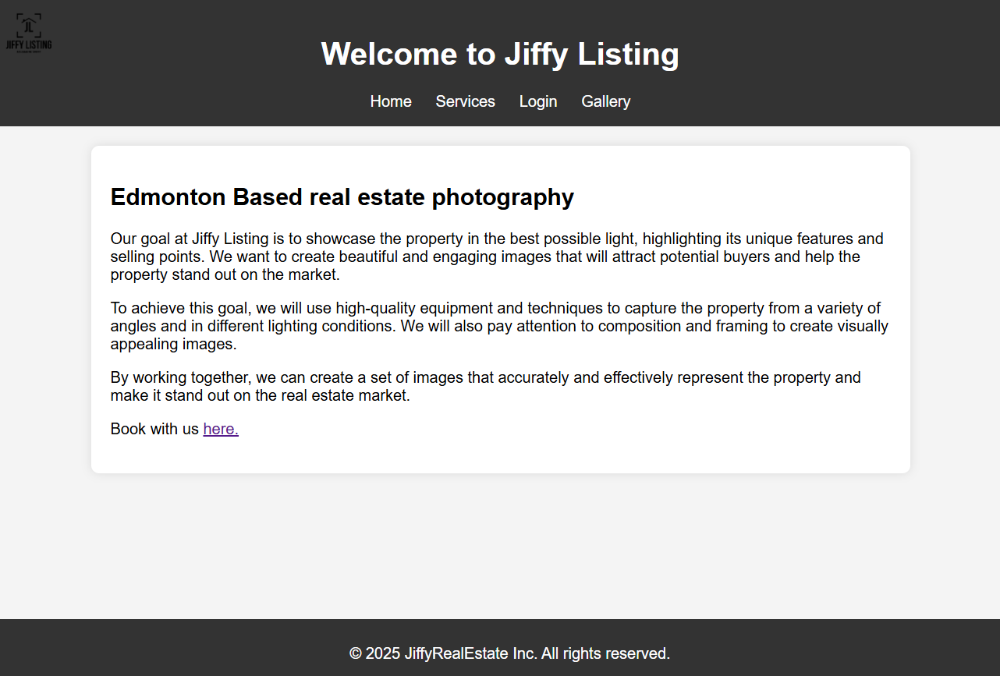

Hello! I'm Asma Kawser Maisha 🌸
I’m a tech enthusiast with a passion for coding, testing, and making sense of data. I’ve built projects
using Python, Java, SQL, JavaScript, and tested applications using Selenium and Cypress.
I’m all about learning new tools, solving tricky problems, and creating software that matters. I’m
looking for a role where I can grow as a developer🛠️, data analyst📈, or QA professional 🐞,
contribute to real projects, and keep improving my skills.
📍 Toronto, ON

Education & Certifications
- 🎓 Bachelor's in Computer Engineering – Toronto Metropolitan University (Jun 2022)
- 📝 IBM Data Analyst Professional Certificate (Expected 2025)
- 📝 Microsoft Azure AI Fundamentals (Jul 2025)
- 📝 Junior Data Analyst Program – NPower Canada (Jun 2025 – Sep 2025)
- 📝 Career Essentials in Software Development by Microsoft (Oct 2024)
Technical Skills
- 💻: Windows 10, Linux
- 🧑💻: SQL, Python, Java, C++, MATLAB, JavaScript, Shell Scripting
- 📅: Agile, Waterfall, Scrum, Kanban, Trello, SDLC
- 📊: Microsoft Excel, Azure Sandbox, Google Workspace, RDBMS, IBM Cognos Analytics, SQLite
- 🔍: JUnit, Selenium, Cypress, Cucumber, BDD
- 🔄: Version Control, Docker, Jenkins, CI/CD, JSON, XML
- 📝: Modular Design, OOP, Hardware-Software Integration
- 🤖: Regression, ML Pipelines, Jupyter, Pandas, NumPy, Scikit-learn, GCP
Soft Skills

Work Experience

QA Consultants
Software Development Engineer in Test
Mar 2023 - Jun 2023
- Designed and implemented a scalable BDD-based test automation framework using Java, Selenium,
Cucumber, Maven, and JUnit, reducing manual testing effort by ~5️⃣0️⃣%.
- Developed and maintained 1️⃣5️⃣+ automated test cases to validate critical application workflows
across 3️⃣+ browser environments, ensuring functional and regression coverage.
- Built 1️⃣0️⃣+ modular Page Object Model (POM) components, improving maintainability, reducing code
duplication, and accelerating updates.
- Created and executed REST API tests in Postman to validate endpoint functionality, error handling,
and performance, enhancing API reliability.
- Integrated automation suites into Jenkins CI/CD pipelines, achieving 1️⃣0️⃣0️⃣% reproducibility across
environments and enabling automated regression runs.
- Utilized Docker to containerize the automation framework, ensuring consistent execution across
development, staging, and CI environments.
Projects
Machine Learning for Performance Prediction of Spark Cloud Application
This project focuses on predicting the execution time of Apache Spark applications
running on cloud platforms using various supervised Machine Learning models. More
specifically, a set of features are extracted from target Spark applications and
a platform configuration, then, the purpose is to design models that produce accurate
estimations of execution time.
View Project Details
View on GitHub


Cucumber-Selenium Test Automation Framework
Main purpose of the project is to test- loging in to a website and placing an order. This project
was made using the complete BDD automation framework template for web functional testing using Java,
Cucumber and Selenium. The template was based on the Page Object model, and it provided all the required
pieces to start creating page classes and tests cases.
View Project Details
View on GitHub
Jiffy Real Estate Photography Website
A static website built using HTML and CSS that showcases a fictional Edmonton-based real estate
photography business. Features: Multi-page layout (index.html, services.html, login.html, booking.html),
Responsive and styled layout using external CSS, Functional login form with basic validation, Sample
photo gallery and services listed.
View Project Details
View on GitHub
